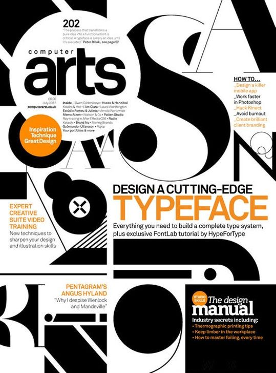

Es el uso de texto en diferentes tamaños, pesos colores y estilos para generar un orden visual dentro de un diseño. La tipografía es importante ya que esta genera en usuario una impacto a primera vista este pueda ser positivo o negativo, ya que a causa de una mala tipografía, el usuario puede dejar de ver el contenido, por ello es de suma importancia de la jerarquización dentro del texto, esta nos ayuda a poder clasificar la importancia u orden y el nivel de importancia o la prioridad en el texto

¿ Porqué es importante la Jerarquía de texto ?
Nos ayuda a generar orden dentro de la nuestra página.
Menos es más no podemos saturar una página con diferente tipos tipografías y tamaños, porque se perderá el punto principal
Definir Títulos, Subtítulos y Párrafos Generales, nos ayudará a determinar el tamaño de la letra y tipografía a utilizar, tomando en cuenta que estas deben de ser para que proporcione claras, legibles y atractivas para cualquier usuario.
Nos ayudara a determinar el color que se utilizara en cada una de ellas.
Ejemplo
Color : Ayuda a establecer la jerarquía visual, contener una estetica visual ayuda a que sea más fácil asimilar la información para el usuario, por ejemplo los colores deben de estar alineados con la marca y sus colores preestablecidos.
Tamaño: Los elementos más grandes ayudan a llamar más la atención, si toda la información tuviera texto grande esto sería muy cansado y no podríamos distinguir lo importante, por lo cual el texto grande se encarga de llamar la atención
¿ Para qué nos sirve ?
Facilita la comprensión: Organiza la información para que sea fácil para el espectador.
Mejora la experiencia: Ayuda a facilitar la navegación, que esta sea fluida y lógica. Pueden encontrar lo que se busca.
Comunicación visual clara, ayuda a través del tamaño, color y tipografía a comunicar de manera clara y efectiva.
Coherencia visual: Nos ayuda a que el trabajo tenga armonía y se vea profesional.